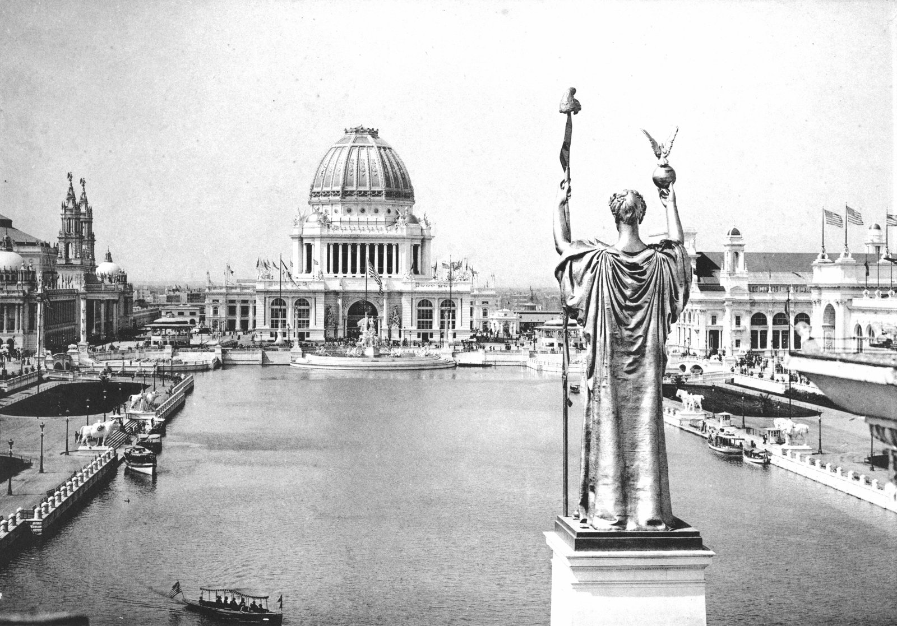
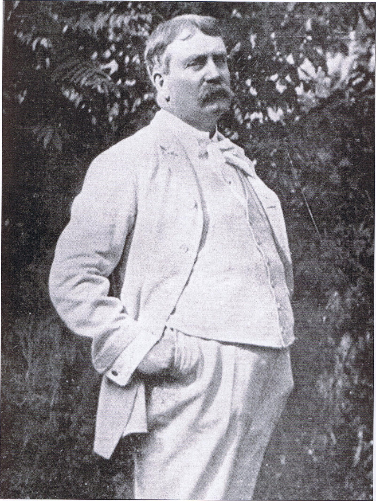
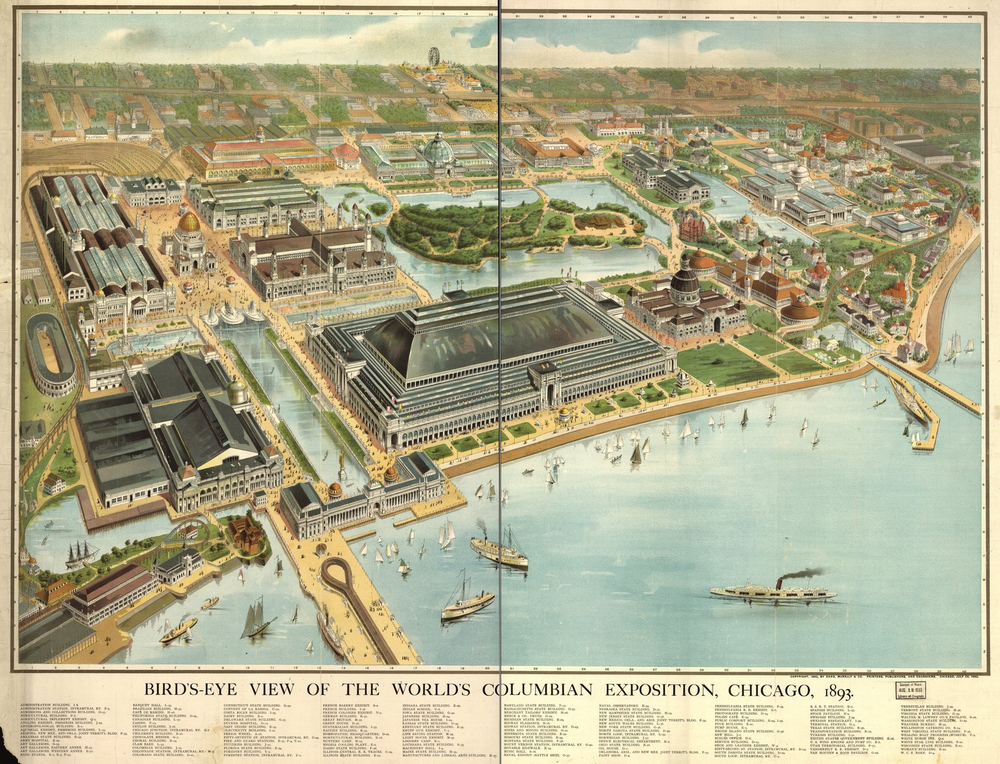
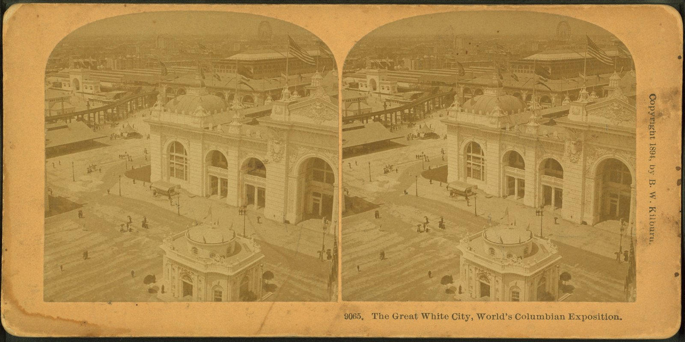

The World's Columbian Exposition opened on May 1, 1893 and closed on October 30. It marked the 400th anniversary of Columbus's landing, one year late. It was held on 633 acres of reclaimed swamp at the south end of Chicago's lakefront, in what is now Jackson Park. It was attended by 27.5 million people, in a country whose total population was 63 million. It was the largest gathering of human beings the United States had organized to that date. It was built by a 47-year-old Chicago architect named Daniel Burnham, working with the largest assembly of design talent ever convened on American soil.
It is the event from which everything else in this organization descends.

Congress chose Chicago over New York, Washington, and St. Louis in February 1890. The city raised $5 million in private subscriptions in 24 hours to seal the bid. The fair corporation appointed Burnham and his partner John Wellborn Root as consulting architects in August 1890. They had 26 months to design and build a city.
Burnham's first decision was to give the work away. He could have designed every building himself. He was the ranking commercial architect of the West and his firm had built more square feet of skyscraper than any other in the country. Instead, he convened the leading architects of the United States and assigned them buildings. Richard Morris Hunt got the Administration Building, the gold-domed centerpiece. Charles McKim of McKim, Mead, and White got the Agriculture Building. George B. Post got the Manufactures and Liberal Arts Building, which at 30 acres under one roof was at that moment the largest enclosed structure in the world. Peabody and Stearns, Henry Ives Cobb, Van Brunt and Howe, Adler and Sullivan: each got a major commission. Frederick Law Olmsted laid out the grounds and the lagoons. Augustus Saint-Gaudens advised on sculpture. Daniel Chester French designed the 65-foot gilded Statue of the Republic that stood at the head of the Court of Honor.
Root died of pneumonia in January 1891, four months after the appointments. Burnham took the program forward alone.
The buildings were temporary. Their structural frames were wood and iron. Their walls and ornament were staff, a mixture of plaster of Paris and jute fiber that could be cast in molds, painted white, and erected in a fraction of the time stone would take. The result was a unified neoclassical city, all white, all roughly the same cornice height around the central basin, in a country whose actual cities at that moment were a riot of soot-blackened brick and competing styles. Visitors named it the White City the day it opened.

The fair's symbolic center was a rectangular basin a third of a mile long, lined on three sides by colonnaded white palaces and capped at the east end by a peristyle facing Lake Michigan. The Statue of the Republic stood at the basin's western end, gilded, holding a globe and an eagle. The whole composition was lit at night by Westinghouse's alternating-current system, the first major event in history illuminated electrically at scale. People who saw the Court of Honor at night in 1893 wrote about it for the rest of their lives.
This is the Beaux-Arts grandeur the United States lost. The Court of Honor was not a parking lot. It was not a stadium. It was not an arena named after an insurance company. It was a public room, sized for 200,000 people, designed so that an immigrant from a Lithuanian village or a farmer from Kansas would walk through it and understand that he was a citizen of a serious country.
633 acres of reclaimed Chicago lakefront swamp
200+ major buildings designed and built in 26 months
30 acres under one roof in the Manufactures Building
27.5 million visits in six months (US population: 63M)
$1 million the fair returned in profit despite a national depression
The first Ferris wheel, 264 feet tall, designed by George Ferris specifically as the American answer to the Eiffel Tower of the 1889 Paris Exposition. Cracker Jack went on sale. Juicy Fruit went on sale. Pabst Brewing won the blue ribbon that became its name. The Pledge of Allegiance was published in The Youth's Companion the previous September and recited by 12 million schoolchildren on Columbus Day 1892 specifically as a fair-related civic exercise. Frederick Jackson Turner read his frontier thesis at a meeting of the American Historical Association inside the fair grounds.
Buffalo Bill Cody set up his Wild West show across the street from the main entrance and made more money than any single concession inside the gates. Scott Joplin played piano on the Midway. Helen Keller met Alexander Graham Bell. The crowd that gathered for Chicago Day on October 9 was 716,881 people, the largest peacetime assembly in the world to that date.

The Palace of Fine Arts, the only building constructed of permanent materials because it was housing actual art that had to be insured, survived. It was rebuilt in stone in the 1930s and is now the Museum of Science and Industry, the most-visited science museum in the Western Hemisphere.
The grounds. Olmsted's lagoons, the Wooded Island, the basin: all became Jackson Park, one of the great public parks in the United States.
The City Beautiful movement followed almost immediately. Senator James McMillan of Michigan had walked the Court of Honor in 1893, and by 1901 he was saying openly that everything his Senate Park Commission was preparing to do for Washington came straight out of what they had seen in Jackson Park. The commission's report, adopted by the Senate in 1902, became the McMillan Plan. It restored L'Enfant's Mall to its original design and laid out the Lincoln Memorial axis the country still walks every Fourth of July. Within four years of that, Cleveland had its own Group Plan organized around a civic mall, San Francisco had hired Burnham for the plan the 1906 earthquake would interrupt the next April, the Taft administration had handed him Manila and Baguio, and the Commercial Club of Chicago had asked him to do at home what he had been doing for everyone else. The Plan of Chicago, published in 1909, was the culmination of the whole sequence. None of those commissions exist without the fair.
Burnham himself. Before the fair he was a successful Chicago commercial architect. After the fair he was the most powerful planner in the United States, the man every major city called when it wanted to imagine itself as something larger.
The fair closed October 30, 1893. The plan was to dismantle the staff buildings over the winter. In May 1894 the Pullman Strike triggered a national railway action that turned violent in Chicago that summer. On the night of July 5, 1894, fires set during the strike spread to the fairgrounds. The Court of Honor burned to the ground. The Manufactures Building, which had held 30 acres under one roof, burned in a single night. Photographs from the morning of July 6 show the basin still there, the colonnades gone, the Statue of the Republic standing alone over a field of ash.
It was the largest urban fire in Chicago since 1871, and it consumed in a few hours what the country had spent two years building.
The Columbian Exposition is the load-bearing event in American civic history. It is the moment the United States proved to itself that it could organize a large public undertaking on the scale of European capitals, and that it could do so beautifully. Every monumental American civic building constructed between 1900 and 1940 is downstream of it. The Lincoln Memorial. Union Station in Washington. Grand Central Terminal. The New York Public Library. The Federal Triangle. The state capitols of Wisconsin, Pennsylvania, Minnesota, and Washington. They all carry the visual program the country first saw in Jackson Park in 1893.
It is also the event that produced Burnham. Without the fair there is no McMillan Plan. There is no Plan of Chicago. There is no Plan of San Francisco, no Plan of Manila, no Plan of Baguio. There is no City Beautiful movement. There is no civic-architecture vocabulary for the United States to rediscover.
And it is a useful counterargument every time someone says a serious public undertaking is impossible in the modern United States. The fair was built in 26 months by a 47-year-old architect, on a swamp, during a national depression, with mostly private money, and it drew a crowd equal to 44 percent of the population of the country. It was not impossible then. It is not impossible now. The argument that it cannot be done is a cultural failure, not a logistical one.
The Columbian Exposition is the founding document of this organization. We are named for the man who built it. Our 47 Shifts model is a direct descendant of the coordination Burnham used in Jackson Park: a small number of leaders, given specific assignments, working to a fixed deadline, on a shared visual program. We talk about it constantly because almost no one in the contemporary United States, including most architects, has been taught what actually happened in the summer of 1893.
We are publishing primary sources, photographs, and the Burnham archive. We are making the case that the country that built the White City in 26 months is the same country still alive in the records, and that what was possible in 1893 is more possible now, with all the technology and capital we have added since. The Court of Honor is gone. The program that produced it is recoverable.
Have research, archives, photos, or 1893 fair connections? Tell us who you are.